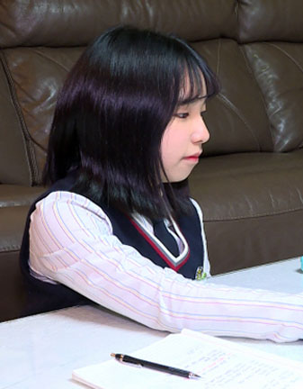
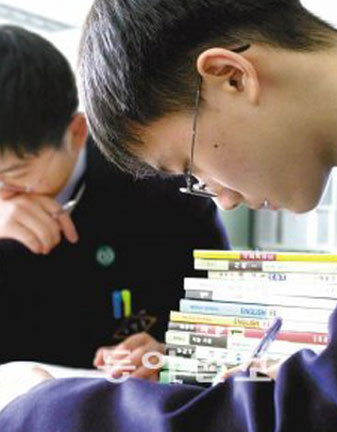
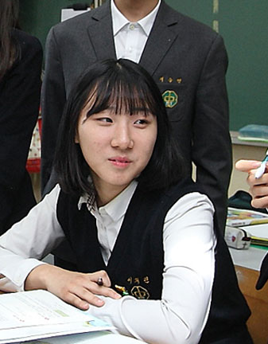
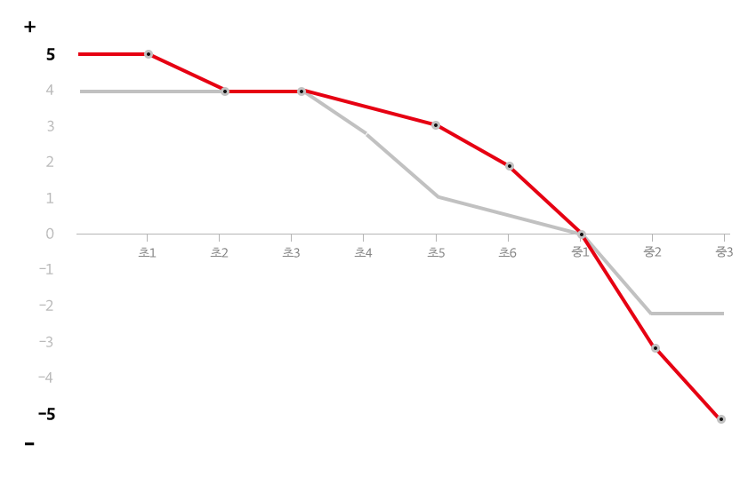

01
15세, 수학을 말하다
대한민국 헌법 제 31조 1항
“모든 국민은 능력에 따라 균등하게 교육을 받을 권리를 가진다”
이는 누구나 평등하게 교육을 받을 수 있는 권리를 나타내지만, 능력에 따라 권리를 제약할 수 있다는 해석도 가능하다. 교육이 능력에 따른 차별의 근거가 될 수도 있는 지점이기도 하다.
수학은 초중고 학습의 교과 중 하나이지만 학생들의 능력을 평가할 수 있는 지표 중 하나이자 대입의 ‘만능열쇠’이기도 하다.
최근 명문학군은 고등학교를 넘어 중학교로 낮아지고 있는 상황, 특목고・자사고를 얼마나 진학하는지에 따라 분류되는 명문 중학학군의 가장 중요한 학력지수는 수학이다. 그런 가운데 수학은 소득에 따른 교육불평등을 선명히 보여주는 리트머스 종이이기도 하다.
2022년, 처음으로 문・이과 통합 방식으로 치러지는 수능에서 수학과목의 문・이과 구분이 없어지면서 수학의 중요성은 더욱 커지고 선행 사교육이 크게 증가할 것이라는 우려와 함께 교육불평등 역시 더 심화될 것이라는 전망이 커지고 있다.
※출처: 서울연구원 <서울도시연구> 제 21권 제 2호 'OECD 형평성 지표로 본 교육격차 추이'
서울연구원에서 발표한 연구자료에 따르면 부모 학력에 따른 수학 학습의 격차는 학년이 올라갈수록 심화되는 경향을 보여준다.
2022년, 처음으로 문・이과 통합 방식으로 치러지는 수능에서 수학과목의 문・이과 구분이 없어지면서 수학의 중요성은 더욱 커지고 선행 사교육이 크게 증가할 것이라는 우려와 함께 교육불평등 역시 더 심화될 것이라는 전망이 커지고 있다.
※출처: 서울연구원 <서울도시연구> 제 21권 제 2호 'OECD 형평성 지표로 본 교육격차 추이'
서울연구원에서 발표한 연구자료에 따르면 부모 학력에 따른 수학 학습의 격차는 학년이 올라갈수록 심화되는 경향을 보여준다.
2022년, 처음으로 문・이과 통합 방식으로 치러지는 수능에서 수학과목의 문・이과 구분이 없어지면서 수학의 중요성은 더욱 커지고 선행 사교육이 크게 증가할 것이라는 우려와 함께 교육불평등 역시 더 심화될 것이라는 전망이 커지고 있다.
-

-

-

-

미지수만큼이나 난해한 과목, 수학.
중2~3학년에 해당하는 15~16세 학생들을 만나 이들이 수학에 대해 생각하고 느끼는 점을 들어봤다.
학생들에게 직접 자신의 수학 학습을 되돌아보는 ‘학습생애사’ 그래프 그리게 했다. 어떤 순간이 힘들었고 또 그때마다 어떻게 극복했는지 혹은 못했는지를 설명하게 했다.
02
나도 수포자가 될까 두렵다
지난 5월 19일, 천안 환서중학교에 재학중인 중학교 3학년 양혜원양을 만났다.
양혜원양 시험기간마다 문제집 두세권씩 푸는 자타공인 수학 고득점자다. 지난 시험에서도 98점을 맞았고, 올백을 받은 적도 있었다.

혜원양은 수학을 비롯한 공부에 대한 의지, 욕심이 있다고 말한다. 선행학습 현재 고2 심화과정 하고 있으며 올해 안으로 고3 과정까지 하게 될 것이라 예상했다.
그렇지만 이 수준으로 해서도 과학고에 가서는 못 따라가지 않을까 걱정이 많다고 했다. 주변에 훨씬 더 선행을 많이 돌린 친구들이 있기 때문이다. 혜원양은 학원에서 더 진도를 빨리 빼주기를 바라고 있었다.
수학 고득점자인 혜원양의 수학에 대한 흥미, 학습에 대한 흥미 그래프는 어떤 모습일까.
변곡점이 된 도심으로의 이사 이후 혜원양은 어떻게 수학에 흥미를 갖고, 성적을 올릴 수 있었을까.
혜원양의 이야기를 들어봤다.
“조금 더 심화된 내용을 배우기 위해서이고 미리 배움으로서 다른 아이들보다 더 잘할 수 있잖아요 지금 다니는 학원 같은 경우는 선행학습과 그 지금 내신에 대한 학습을 동시에 진행하고 있어요. 지금 고등학교 2학년 2학기 심화하고 있어요.”
“저도 빨리 저렇게 하고 싶다고. 수2 미적분 하고 있어요 미분하고 있어요.
일단 고2 심화정도 되니까 해설을 봐도 이해가 안 되는 경우가 있어요 그런 경우에는 학원 선생님께 가서 해설에서 왜 그렇게 나오는지가 궁금하면...아무래도 방정식 자체는 어렵지 않은데 활용 부분에서 다양한 곳에서 문제가 출제될 수 있어서 아무래도 안 접해본 문제다 보니까 그게 어려웠던 거 같아요.
제 친구들이 방학때 대치동에 가서 사촌네 집에서 자면서 수업을 들었거든요. 그 친구랑 연락은 끊겼는데 아무래도 그렇게 하면 성적이 더 오르지 않을까 그런 생각이 들어요. 왜냐하면 새벽부터 줄서서 강의듣고 그러잖아요. 그런 학생들이랑 비교하면 불안한 마음은 들죠. 그래서 더 열심히 하죠”

수업이 모두 끝난 혜원양이 집에가기 위해 교실을 나서고 있다.
“수학은 알면 알수록 재밌는 과목이죠.
수학은 약간 탑쌓기에요. 아래가 불안정하면 위에가 결코 견고해질 수 없어요. 그런거는 그나마 괜찮은데 연립방정식 막 그런 거에 좀 그렇죠. 보통 1학년에서 포기한 친구들은 1차방정식의 변환이나 그런 부분에서 많이 걸려서 포기를 하고...
옆에서 알려주는 사람이 있어야 해요 저는 인제 학원 선생님이셨는데 정말 좋은 분이셨어요.”
“고등학교 선생님이나 학원 쌤들이 하시는 말씀이 시험공부는 수학부터 제대로 잡아놓고 하는 거라고 하시거든요. 수학이 잘되어야 다른 것도 잘 된다고 하셔서.
수학이 잘 안됐다라는 거는 그런 취업쪽 그런 사람이 봤을 때 얘는 다른 것도 흔들릴 수 있구나 이렇게 볼 수도 있고 수학이 많이 포기된 상태라고 하면 얘는 끈기가 없는 건가? 이렇게 생각 할수도 있죠.”
혜원양은 수학을 비롯한 공부에 대한 의지, 욕심이 있다고 말한다. 선행학습 현재 고2 심화과정 하고 있으며 올해 안으로 고3 과정까지 하게 될 것이라 예상했다.
그렇지만 이 수준으로 해서도 과학고에 가서는 못 따라가지 않을까 걱정이 많다고 했다. 주변에 훨씬 더 선행을 많이 돌린 친구들이 있기 때문이다. 혜원양은 학원에서 더 진도를 빨리 빼주기를 바라고 있었다.
“제 꿈은 대한민국에 아직 없는 직업일 거에요. 로봇컨설턴트인데 제가 로봇을 좋아해하거든요. 과고를 가려는 이유도 로봇 때문이에요.
로봇 공학자를 할까 생각도 해봤는데 로봇 공학자는 앉아서 연구만 해야하잖아요. 저는 말이 많은 성격이라서 앉아서 연구만 하고 살수는 없는 거 같은거에요. 그렇게 발견한게 로봇컨설턴트에요.”
혜원양은 취재를 위해 만났던 30여명의 학생들 중에서 가장 안정적으로 꾸준히 수학에 흥미를 키워가고, 성적을 유지하고 있는 학생이었다. 혜원양은 학원에 영향을 많이 받았다고 응답했다.
그러나 모든 학생이 혜원양과 비슷한 경험을 하진 못했다.
03
수학 이별 공식
대전에 중촌동에 위치한 중촌중에 재학중인 이석준군(16)의 꿈은 래퍼다. 이석준군은 하교 후의 대다수 시간을 랩 연습을 하고 가사를 쓰면서 시간을 보낸다.
“학교 수학시간에도 거의 자거나 딴 생각하는 편이에요. 코로나로 온라인 수업을 할 때도 유튜브 보거나 게임을 했죠.”
이석군준은 태권도를 제외하면 일반적인 의미의 보습학원은 다닌 적은 없다.

가장 최근 수학 성적은 9점, 지금은 수학을 완전 포기했다. 수포자가 바로 자신의 이야기라고 생각되서 공감이 된다고 한다.
“아예 1,2점인 친구도 있을걸요? 심각해요 지금. 2학기가 되서 다시 공부하려고요. 일단 60점은 넘겨야죠. 좀 크게 잡으면 80점.
수포자가 저를 말하는 거 같기도 해요. 수학을 포기한 사람들. 수학을 배우는 이유는 솔직히 저도 잘 모르겠어요. 그냥 살면 안되나? 싶기도하고.
수학을 안 배울 수 있다고 하면 전 안 배우고 싶죠.”
수학은 물론 학습에 대한 흥미를 잃은 듯한 석준군의 학습 그래프는 어떤 모습일까.

이석준군의 수학에 대한 흥미는 하락 곡선을 그리고 있었다.
초등학교 2학년, 3학년까지 그나마 긍정적이었던 수학에 대한 흥미는 4학년 이후로는 계속 마이너스 구간에 머무르고 있었다.
더 드라마틱한 변화를 보여준 것은 전체 교과에 대한 학습 흥미도 였다.
초등학교 1학년 때 가장 높은 수치를 보여줬던 학습 흥미도는 끊임 없이 하락했다.
석준군의 학습사에서 변곡점은 초등학교 5학년이었다.
한번 수학에서 멀어져버린 관심은 전체 교과목에 대한 관심, 흥미까지 끌어내렸다.
다른 학생들이 그려본 그래프를 종합해봐도 이석준군 처럼 초등학교 4학년부터 중학교 1학년 사이에 학습에 대한 흥미가 하락하는 경우 가장 많았다.
제로 수학 교육과정상 초등학교 4학년부터 중학교로 넘어가는 시점을 통상 ‘난이도 점프’가 일어나는 구간으로 꼽는다.
이 시기에 등장하는 개념이 '분수 계산, xy 미지수, 방정식, 함수, 비례식, 이항, 다항식 정리' 등인데 대다수의 학생들이 이름만 들어도 어렵다고 느낀다.
“공식이나 루트같은 거 있잖아요? 기호도 어렵고, 쓰는 식도 많고 그래서 힘든 게 아닌가 싶어요. 국어나 시 이런 거는 한글이어서 그냥 하면 되는데, 수학은 기호나 그런 게 있으니까...”
수학은 ‘나선형 학습’ 구조로, 앞에서 배운 것을 모르면 그 다음 진도를 따라갈 수가 없다. 한번 수학이라는 교과목에서 멀어진 학생들이 태양계를 벗어난 명왕성처럼 점점 더 수학으로부터 멀어질 수 밖에 없는 이유가 여기에 있다.
여기에 교육에 대한 가정의 인식의 격차가 더해진다. 석준군은 수학에 대한 부족한 이해를 보충할만한 별도의 사교육을 받지 않았다.
“부모님이 제 학업에 관심 거의 없는 거 같아요. 성적 못 받아오면 짜증내시기도 하지만, 실제 관심은 거의 없는 거 같아요. 저는 부모님에게 제 희망 직업은 랩퍼고, 공부는 딱히 상관이 없는거라서 믿어달라고 나중에 호강시켜 드린다고 하면 알겠다 하시고. 공부에는 딱히 생각이 없으신 거 같아요.”
04
선행학습 딜레마, 할 수록 점점 더 불안해진다
선행학습 딜레마, 모두가 점점 더 불안해진다
학습 히스토리에서 석준군과 비슷한 하락 곡선을 보여준 친구가 또 있었다. 동도중학교에 재학중인 위서현양(16)에게 수학은 '영원한 걸림돌'이자 '학생들을 미치게 하는 과목'이다.
동도중 위서현양이 교실에서 학우의 이야기를 듣고 있다.
“저희 학교가 수학이나 과학쪽이 많이 어렵게 나오다보니까 중학교 들어와서 수학에 대한 흥미도가 전체 학습에 대한 흥미도보다 많이 떨어진 것 같아요.
초등학교까지는 제가 공부를 하면 기대했던 점수가 나왔었는데, 이제는 공부할 양도 늘어나고...솔직히 수업만 들어서는 시험을 절대 못 쳐요.”
위서현양의 학습 히스토리 그래프
수학 학습 흥미전체 교과 학습 흥미
실제로 위서현양의 성적은 상위권에 속한다. 그러나 경쟁이 치열한 학교에서 다른 학생들과 자신을 비교하고 위축이 되면서 점점 수학에 대한 자신감, 흥미가 떨어지고 있었다.
“수업에서 공부했던 내용과는 별개로 창의적인 문제가 나오기 때문에 어려운 문제를 풀면서 '내가 사교육 없이 이 문제를 과연 맞출 수 있을까' 이런 생각이 들고...'다음에도 못 맞추겠다' 식의 허무함 때문에 흥미도가 떨어졌어요.”
주변 동급생들의 빠른 선행학습도 흥미를 잃는 원인이 됐다.
“대부분 학생들이 고등학교 시험을 선행해요. 다른 아이들은 다 미적을 하고 있는데 왜 나는 아직 이거밖에 못 하지 하고 비교도 하고. 중학교 3학년이 되니까 고등학교 준비를 해야 한다고 선생님께서 뒤에 세네문제는 고등학교 모의고사 형식으로 냈다고 하시더라고요.”
위서현 양은 사교육 없이 수학을 공부하느니 차라리 포기하겠다고 이야기한다. 위서현양은 수학 학원 2곳을 포함해 6곳의 학원을 다니고 있다. 하교후 사실상 놀 시간이 전혀 없다.
<헌법 제 31조>은 EBS와 경향신문이 협력하여 제작한 기획 시리즈입니다.
제작에 참여한 사람들
- 기획 EBS 오정호, 경향신문 정제혁
- 글/구성 윤선영
- 취재 경향신문 김서영, 이성희
- 촬영 박방헌, 김창화, 박준형, 이대우
- 조명 엘라이팅
- 믹싱 가락스튜디오
- 음악 최형원
- 타이틀 윌픽처스
- 종합편집 편집마을
- 세트 디자인 안현정
- 세트 총촬 이기남
- 소품 정희영
- 기술감독 우동철
- SNS관리자 김성은
- 인터랙티브 경향신문 이아름, 김유진
- 연출 김현수, 김나연